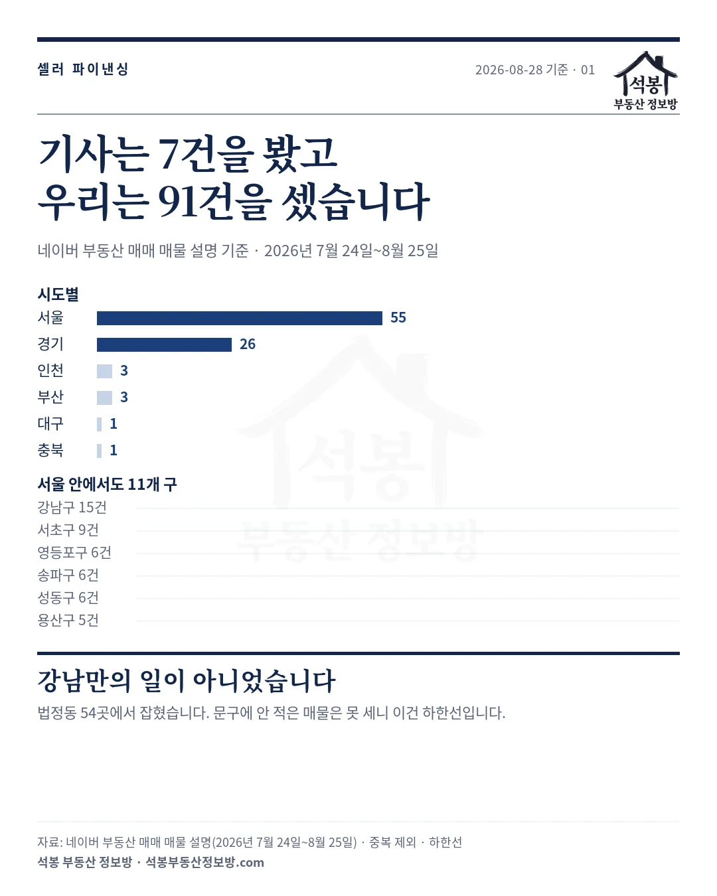
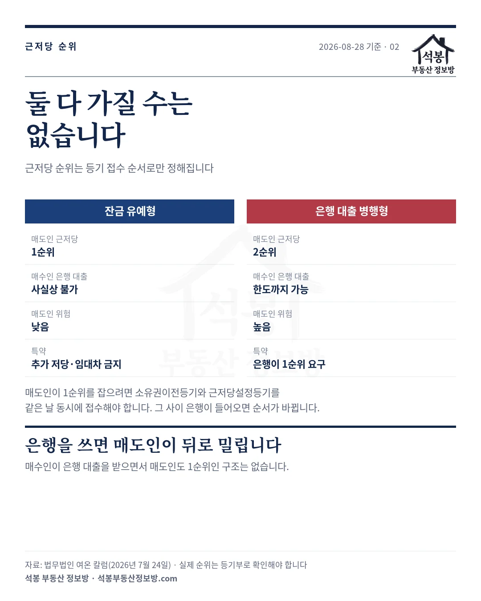
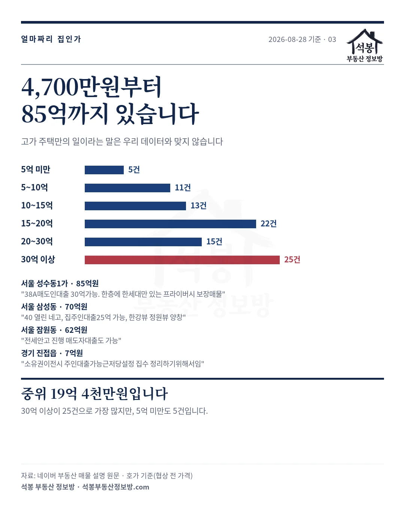
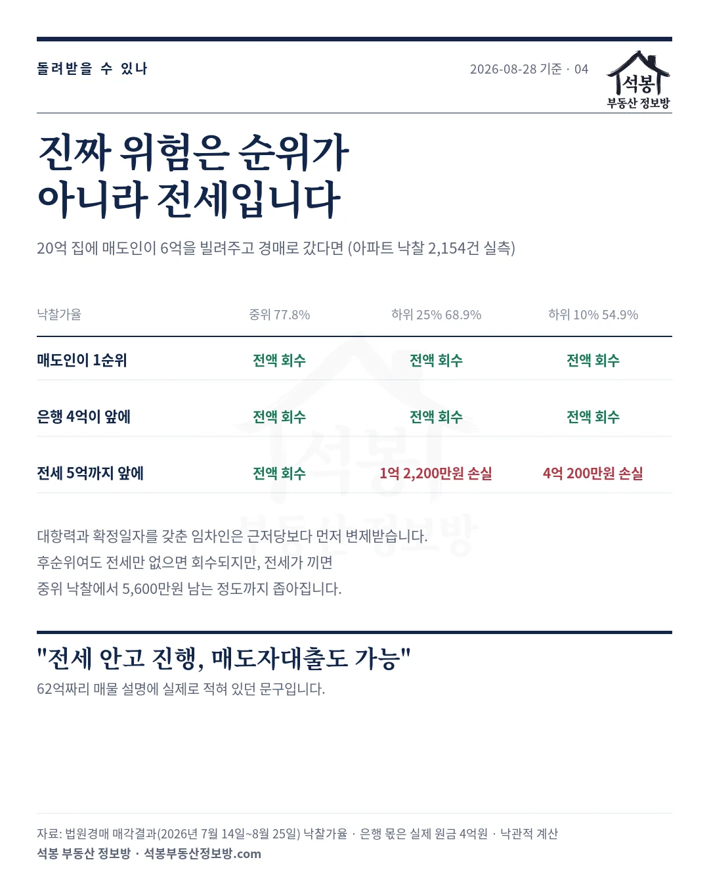
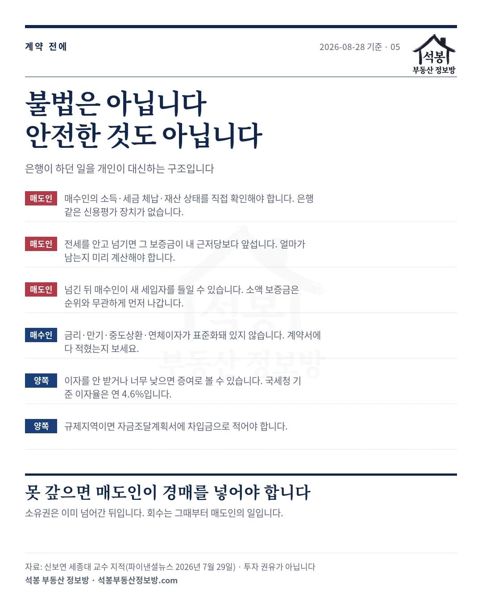

요즘 "매도인 대출"이라는 말이 부쩍 들립니다. 집을 파는 사람이 사는 사람에게 직접 돈을 빌려주는 거래인데, 대출 규제가 강해지면서 다시 이슈가 됐습니다.
관심은 높아졌는데 정작 어떤 구조인지, 누가 어떤 위험을 지는지 짚어주는 설명은 드뭅니다. 궁금해하시는 분들이 많아 정리했습니다. 실제 매물을 직접 세어 91건을 찾았고, 4,700만원짜리 빌라부터 85억 아파트까지 있었습니다. 그리고 돈을 빌려준 매도인이 그 돈을 돌려받을 수 있는지를 저희 경매 데이터로 계산해 봤습니다.
하나. 2020년에도 똑같았습니다
새로운 거래가 아닙니다. 대출이 막힐 때마다 돌아오는 거래입니다.
2020년 15억원 초과 주택의 주택담보대출이 전면 금지됐을 때도 강남에서 쓰였습니다. 부동산 리서치 25년 차인 김학렬 스마트튜브연구소장은 당시를 두고 "일부 자산가들만 알고 쓰던 방식"이었다고 말합니다.
지금 다시 나온 이유도 같습니다. 규제지역에서는 집값이 비쌀수록 대출이 줄어듭니다.
| 주택 가격 | 주택담보대출 한도 |
|---|---|
| 15억원 이하 | 6억원 |
| 15억원 초과 25억원 이하 | 4억원 |
| 25억원 초과 | 2억원 |
20억짜리 집을 산다면 은행에서 나오는 돈은 4억원입니다. 나머지 16억원을 스스로 만들어야 합니다. 그 빈자리를 집을 파는 사람이 메워주는 것이 셀러 파이낸싱입니다.
강남구 자곡동 전용 59㎡(17.8평) 매물에는 "집주인 대출 6억"이라는 문구가 붙었습니다. 자기자본 10억원에 은행 4억원, 매도인 6억원을 더해 20억원을 맞추는 구조입니다.
가입하시면 지역 시장조사 보고서(약식)를 2회 무료로 요청하실 수 있습니다.
둘. 우리가 센 91건은 강남에만 있지 않았습니다
기사에 등장한 매물은 7건이었습니다. 강남·송파·반포·개포에 광교와 부산 해운대가 더해진 정도입니다.
저희는 직접 세어 봤습니다. 2026년 7월 24일부터 8월 25일까지 네이버 부동산에 올라온 매매 매물에서 "집주인 대출"·"매도인 대출"·"셀러파이낸싱" 같은 문구를 찾아 중복을 뺀 91건입니다.
| 시도 | 건수 | 서울 안에서 |
|---|---|---|
| 서울 | 55건 | 강남 15 · 서초 9 · 영등포 6 · 송파 6 · 성동 6 · 용산 5 · 마포 3 등 11개 구 |
| 경기 | 26건 | 성남 분당 · 광명 · 남양주 · 평택 · 고양 · 안양 · 김포 등 |
| 인천 | 3건 | 송도 등 |
| 부산 · 대구 · 충북 | 5건 | 지방 광역시와 도 단위까지 |
모두 법정동 54곳에서 나왔습니다. 전부 매매 매물이고, 아파트가 79건입니다. 재건축 4건, 빌라 3건, 단독다가구 3건, 오피스텔 2건이 뒤를 이었습니다.
가격대가 더 눈에 띕니다. 30억원 이상이 25건으로 가장 많지만, 5억원 미만도 5건 있었습니다.
| 가격대 | 건수 | 비고 |
|---|---|---|
| 5억원 미만 | 5건 | 가장 싼 매물은 평택 서정동 빌라 4,700만원 |
| 5억~10억원 | 11건 | 고양·안양·남양주 등 |
| 10억~15억원 | 13건 | |
| 15억~20억원 | 22건 | |
| 20억~30억원 | 15건 | |
| 30억원 이상 | 25건 | 가장 비싼 매물은 성동구 트리마제 85억원 |
중위값은 19억 4,000만원입니다. 고가 주택에 몰려 있는 건 맞지만, 고가 주택만의 일은 아니었습니다.

셋. 매물 설명이 구조를 그대로 말해줍니다
매물 문구를 읽다 보면 이 거래가 어떻게 굴러가는지가 보입니다. 원문 그대로 옮깁니다.
| 물건 | 호가 | 매물 설명(원문) |
|---|---|---|
| 성동구 성수동1가 트리마제 | 85억원 | "38A매도인대출 30억가능. 한층에 한세대만 있는…" |
| 강남구 삼성동 아크로삼성 | 70억원 | "40 열린 네고, 집주인대출25억 가능, 한강뷰…" |
| 서초구 잠원동 신반포2차 | 62억원 | "전세안고 진행 매도자대출도 가능" |
| 남양주 진접읍 다가구 | 7억원 | "소유권이전시 주인대출가능근저당설정 집수 정리하기위해서임" |
| 평택 장안동 로제비앙 | 3억 8,300만원 | "무피 l 매도자 대출가능O l 귀한소형평수…" |
| 평택 서정동 빌라 | 4,700만원 | "매도인 대출 가능 싸요 급매 무적 싸요…" |
남양주 7억원 매물이 구조를 가장 정확하게 적어 놨습니다. "소유권이전시 주인대출가능근저당설정". 소유권을 넘기면서 동시에 근저당을 설정한다는 뜻입니다. 왜 하필 동시인지는 다음 절에서 말씀드리겠습니다.
평택 매물의 "무피"는 자기자본을 들이지 않는다는 뜻으로 쓰이는 말입니다. 거기에 매도자 대출이 붙었습니다. 잠원동 62억원 매물의 "전세안고 진행"은 이 글에서 가장 위험한 조합인데, 넷째 절에서 다루겠습니다.
넷. 매도인은 몇 순위일까요
여기서 많이들 궁금해하시는 지점이 나옵니다. 매수인이 은행 대출도 받는다면, 돈을 빌려준 매도인은 후순위로 밀리는 걸까요?
답부터 말씀드리면 요행은 없고, 둘 다 가질 수도 없습니다.
법이 정해 놓은 게 있습니다. 부동산등기법 제4조는 "같은 부동산에 관하여 등기한 권리의 순위는 법률에 다른 규정이 없으면 등기한 순서에 따른다"고 못박고 있습니다. 같은 구에서 한 등기끼리는 순위번호, 다른 구에서 한 등기끼리는 접수번호로 정해집니다.
근저당권은 등기부 을구에 나란히 들어갑니다. 결국 등기 접수 순서가 전부입니다. 먼저 들어간 쪽이 먼저입니다. 협상으로 바꿀 수 있는 게 아닙니다.
그래서 매도인이 1순위를 잡으려면 소유권이전등기와 근저당권설정등기를 같은 날 동시에 접수해야 합니다. 소유권만 먼저 넘기고 며칠 뒤에 근저당을 설정하면, 그 사이에 매수인이 은행에서 대출을 받아 선순위를 잡아버릴 수 있습니다.
그래서 현실에는 두 갈래가 있습니다. 시장은 이 둘을 뭉뚱그려 "셀러 파이낸싱"이라 부릅니다.
| 잔금 유예형 | 은행 대출 병행형 | |
|---|---|---|
| 매도인 근저당 | 1순위 | 2순위 |
| 매수인의 은행 대출 | 사실상 불가 | 한도까지 가능 |
| 매도인이 지는 위험 | 낮음 | 높음 |
| 계약서 특약 | 추가 저당·임대차 금지 | 은행이 1순위를 요구 |
잔금 유예형에서는 계약서에 "매도인의 사전 서면 동의 없이 추가 저당권 설정이나 임대차 계약을 하지 않는다"는 특약을 넣습니다. 매도인이 1순위를 지키려면 매수인의 은행 대출을 막아야 하기 때문입니다.
반대로 매수인이 은행 대출을 쓰면 은행이 1순위를 가져갑니다. 매도인은 그 뒤입니다. 매수인이 은행 대출을 받으면서 매도인도 1순위인 구조는 없습니다.
채권최고액은 통상 빌려준 돈의 120~130%로 잡습니다. 6억원을 빌려줬다면 7억 2,000만원에서 7억 8,000만원짜리 근저당이 걸립니다.
참고로 이 거래가 널리 알려진 계기는 대통령 부부의 분당 아파트 매각이었습니다. 2026년 7월 14일 29억원에 계약해 16일 소유권이 넘어갔고 같은 날 채권최고액 17억 7,000만원의 근저당이 설정됐습니다.
청와대는 "매매는 통상적 방식으로 이뤄졌고 근저당은 10월 말에 처리될 미지급 잔금에 대한 것"이라고 밝혔습니다. 부동산 업계에서는 재건축 조합원 지위 승계를 위해 등기를 서둘렀다는 해석이 나왔습니다.
저희가 이 사례를 든 것은 등기부에 남은 매물 거래의 형태를 설명하기 위해서일 뿐이며, 정치적인 의도는 없습니다.


다섯. 못 갚으면 어떻게 되나
여기가 이 글에서 가장 중요한 대목입니다.
매수인이 약속한 날에 돈을 갚지 않으면, 매도인은 근저당을 실행해 직접 경매를 신청해야 합니다. 소유권은 이미 넘어간 뒤입니다. 소송을 거치지 않아도 되는 건 다행이지만, 회수는 그때부터 매도인의 일입니다.
그러면 실제로 얼마나 돌려받을 수 있을까요. 저희가 매일 모으는 법원경매 매각결과로 계산해 봤습니다. 아파트 낙찰 2,154건(매각기일 2026년 7월 14일~8월 25일)의 감정가 대비 낙찰가율은 중위 77.8%, 하위 25%가 68.9%, 하위 10%가 54.9%였습니다.
20억원짜리 집에 매도인이 6억원을 빌려줬고 경매로 넘어갔다고 두면 이렇게 됩니다.
| 앞에 누가 있나 | 중위 낙찰 15억 5,600만원 | 하위 25% 13억 7,800만원 | 하위 10% 10억 9,800만원 |
|---|---|---|---|
| 매도인이 1순위 | 전액 회수 | 전액 회수 | 전액 회수 |
| 은행 4억원이 앞에 | 전액 회수 | 전액 회수 | 전액 회수 |
| 전세 5억원까지 앞에 | 전액 회수 5,600만원 남음 | 1억 2,200만원 손실 | 4억 200만원 손실 |
후순위라는 사실 자체는 생각보다 덜 위험했습니다. 은행이 앞에 있어도 세 경우 모두 6억원이 돌아옵니다. 낙찰가율이 하위 10%로 떨어져도 그렇습니다.
판을 바꾸는 건 전세입니다. 이것도 법에 적혀 있습니다.
주택임대차보호법 제3조의2 제2항은 대항요건과 확정일자를 갖춘 임차인은 경매나 공매에서 "후순위권리자나 그 밖의 채권자보다 우선하여 보증금을 변제받을 권리가 있다"고 정합니다. 매도인의 근저당이 그 임차인보다 뒤라면, 임차보증금이 먼저 나가고 남은 돈만 매도인 몫입니다.
전세가 끼면 안전한 구간이 확 좁아집니다. 전세가 없으면 낙찰가율이 하위 10%까지 떨어져도 회수되는데, 전세가 끼면 중위 낙찰에서 5,600만원 남는 정도로 아슬아슬해지고 하위 25%부터는 손실입니다. 하위 10%면 4억원을 못 받습니다.
그런데 앞에서 본 잠원동 62억원 매물이 바로 "전세안고 진행 매도자대출도 가능"이었습니다. 계산상 가장 위험한 조합이 실제 매물로 나와 있는 것입니다.
신보연 세종대 부동산AI융합학과 교수도 같은 지점을 짚습니다. "기존 임차인이 먼저 대항력과 확정일자를 갖췄다면 경매 과정에서 임차보증금이 매도인의 근저당채권보다 먼저 변제될 수 있다"는 것입니다.
여기까지는 거래 전부터 살고 있던 세입자 이야기입니다. 그런데 집을 넘긴 뒤에 매수인이 새로 세입자를 들이면 어떻게 될까요.
원칙은 매도인 쪽이 유리합니다. 근저당이 이미 등기된 뒤에 들어온 임차인은 후순위라 경매에서 매도인이 먼저 받습니다. 다만 예외가 하나 있습니다.
주택임대차보호법 제8조의 최우선변제권입니다. 보증금이 적은 임차인은 순위와 상관없이 일정액을 근저당권자보다 먼저 받아 갑니다. 서울은 보증금 1억 6,500만원 이하일 때 5,500만원까지입니다.
| 지역 | 보증금이 이 금액 이하면 | 먼저 받는 금액 |
|---|---|---|
| 서울특별시 | 1억 6,500만원 | 5,500만원 |
| 과밀억제권역·세종·용인·화성·김포 | 1억 4,500만원 | 4,800만원 |
| 광역시·안산·광주·파주·이천·평택 | 8,500만원 | 2,800만원 |
| 그 밖의 지역 | 7,500만원 | 2,500만원 |
임차인이 여럿이면 각자 이 금액을 받되, 다 합쳐 주택가액의 절반을 넘지는 못합니다. 매도인이 1순위를 잡아 두어도 이 부분만큼은 막을 수 없습니다.
그래서 넷째 절에서 본 "임대차 계약을 하지 않는다"는 특약이 형식적인 문구가 아닙니다. 등기 순위로 지킬 수 없는 구멍을 계약으로 막는 것입니다.
계산 기준을 밝혀 둡니다. 앞선 은행 몫은 채권최고액이 아니라 실제 빌린 4억원으로 뺐습니다. 채권최고액(보통 대출금의 120%)은 "여기까지 담보한다"는 상한이지 배당받는 금액이 아니기 때문입니다.
다만 실제로는 이보다 나빠질 수 있습니다. 경매까지 갔다는 건 연체가 쌓였다는 뜻이라 은행 채권에 지연손해금이 붙고, 경매 비용과 당해세도 앞서 나갑니다. 그만큼 매도인 몫은 줄어듭니다.
감정가를 매매가와 같다고 둔 것도 낙관적인 쪽입니다. 이런 거래가 경매까지 가는 국면은 대개 하락기라 그때 감정가는 더 낮게 잡힙니다.

여섯. 이자를 안 받으면 증여가 됩니다
돈을 빌려주는 쪽이 흔히 놓치는 대목입니다. 이자를 안 받거나 너무 적게 받으면 증여로 봅니다.
상속세 및 증여세법 시행령이 정한 적정 이자율이 기준인데, 현재 연 4.6%입니다. 이 이율로 계산한 이자와 실제로 받은 이자의 차액이 연 1,000만원 이상이면 증여세 문제가 생깁니다. 거꾸로 계산하면 무이자로 빌려줄 수 있는 금액은 약 2억 1,700만원까지입니다.
차용증만 써두고 원금을 실제로 갚지 않으면 형식적인 차용으로 보고 증여로 판단할 수 있습니다. 부모와 자녀처럼 특수관계인 사이의 거래는 자금출처 조사 대상이 되기 쉽습니다.
규제지역이라면 자금조달계획서에 이 돈을 차입금으로 적어야 합니다. 빌린 사실 자체를 숨기는 것이 문제가 되지, 빌린 것 자체가 문제는 아닙니다.
불법은 아닙니다, 안전한 것도 아닙니다
이 둘은 다른 이야기입니다.
매도인과 매수인이 합의해 근저당을 설정하는 것은 계약자유의 영역이고 적법합니다. 다만 실제 매매나 잔금 채권이 없는데 강제집행을 피하거나 세금을 줄일 목적으로 허위 근저당을 설정하면 그건 무효이고 형사처벌 대상입니다.
합법인 거래라도 은행이 하던 일을 개인이 대신하는 구조라는 점은 남습니다. 신용심사도, 담보 관리도, 못 받았을 때 회수도 전부 매도인 몫입니다. 은행에는 연체를 걸러내는 장치가 있지만 개인에게는 없습니다.
매도인이라면 매수인의 소득과 세금 체납 여부, 재산 상태를 직접 확인해야 합니다. 무엇보다 그 집에 선순위 임차인이 있는지를 전입일과 확정일자, 보증금 규모까지 봐야 합니다. 앞의 표가 보여주듯 회수 가능성을 가르는 건 거기입니다.
매수인이라면 금리와 만기, 중도상환, 연체이자가 계약서에 다 적혔는지 봐야 합니다. 은행 상품처럼 표준화돼 있지 않아서, 안 적힌 건 나중에 다투게 됩니다.
대출 규제는 앞으로도 조였다 풀렸다 할 것이고, 조일 때마다 이 거래는 다시 나올 것입니다. 2020년에 그랬고 2026년에 또 그랬습니다. 그때마다 은행이 비운 자리를 개인이 채우고, 은행이 지던 위험도 개인이 지게 됩니다.

원자료: 매물 91건은 네이버 부동산 매매 매물 설명(2026년 7월 24일~8월 25일)에서 「집주인·매도인·매도자 대출」·「셀러파이낸싱」 문구가 있는 것을 골라 중복을 뺀 수입니다. ⚠️기간이 짧고 지역이 고르게 잡히지 않아 시계열 비교는 할 수 없고, 문구에 적지 않은 매물은 못 잡으므로 하한선입니다. 매물 문구일 뿐 거래 성사를 뜻하지 않습니다
회수 계산은 법원경매 아파트 2,154건(매각기일 2026년 7월 14일~8월 25일)의 감정가 대비 낙찰가율입니다. 앞선 은행 몫은 채권최고액이 아니라 실제 원금 4억원으로 뺐습니다. ⚠️감정가를 매매가와 같다고 둔 낙관적 가정이고, 지연손해금·경매 비용·당해세를 넣지 않아 실제 매도인 몫은 더 줄 수 있습니다
등기 순위(부동산등기법 제4조)·임차인 우선변제(주택임대차보호법 제3조의2 제2항)·적정 이자율(상증세법 시행령 제31조의4)은 법령 원문으로 확인했습니다. 시장 상황은 헤럴드경제 2026년 7월 22일, 파이낸셜뉴스 7월 29일입니다
편집·제작: 석봉 부동산 정보방 · 투자 권유가 아닙니다.